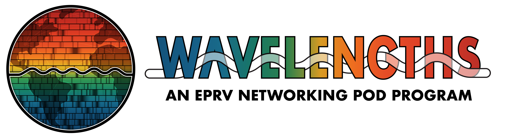

WAVELENGTHS

Wavelengths Now Accepting Applications for 2026-2027 Pods!
The EPRV RCN is kicking off a second year of Wavelengths: an EPRV Networking & Mentoring Pods Program, and sign-ups are now open for both pod organizers and pod members!!
See below for more information about the program and then use the Pod Member or Pod Organizer application forms to sign up!
Note:We encourage those who participated in the 2025/2026 Wavelengths cohort to sign up again! You'll be intentionally placed in a pod with different members from last year and many of the discussion
topics will be new for this iteration of the program.
Overview
Wavelengths is a community-building initiative designed to foster informal, cross-disciplinary connections within the extreme precision radial velocity (EPRV) community. By facilitating small-group conversations across career stages, areas of expertise, and instrument teams, we aim to lower the barrier to meaningful professional relationships and shared scientific insight.
Goals
- Promote low-effort, low-pressure, professional networking across the EPRV community.
- Foster connections between early-career and more senior researchers.
- Bridge gaps between subfields, such as instrumentation, data analysis, and theory.
- Encourage cross-collaboration and awareness across international spectrograph teams.
Program Structure
- Participants will be placed into small “pods” of 5-6 people, balanced across career stages, interests, and institutions.
- Each pod will have one designated Pod Organizer (typically a mid-career or senior researcher) to facilitate meetings and help guide discussion.
- Pods will meet every other month, either virtually or in person.
- Each meeting will come with a suggested theme and optional discussion questions, provided by the RCN Steering Committee. Pods are encouraged but not required to follow these themes. Example themes includes: navigating job markets in different countries, sharing favorite tools or techniques, exciting new papers and what they mean for the field, etc
Time Commitment
The second round of Wavelengths will run for 1 year, starting in September/October 2026, and include six meetings for each pod.
- Roughly 1 hour per meeting for all pod members
- Additional 15-30 minutes per meeting for the pod organizer to handle coordination / logistics
- Optional feedback surveys at the middle and end of the year
Pod Member Expectations
- Attend bimonthly meetings with your pod and contribute to the themed discussions
- Share your own experiences and help to create a welcoming and inclusive space for other pod members to do the same
- Build your network and develop new and deeper connections with the broader EPRV community
Pod Organizer Expectations
The Organizer role is intended to be low effort and low pressure. We're aiming to create a space for organic, supportive conversations—not formal mentoring relationships or structured workshops. This round of Wavelengths will run for 1 year, starting in Fall 2026, and include six meetings for each pod.
As a Pod Organizer, your main role would be to:
- Schedule a meeting every other month with your pod and encourage participation (pod organizers are not expected to prepare presentations or carry the conversation).
- Use themes and questions provided by the Wavelengths leads to guide the conversation at each meeting (or let the discussion go wherever it flows!)
- Foster a welcoming and inclusive space
- Help connect pod members to the broader community when relevant. Organizers are encouraged to post in the #pod-organizers Slack channel to crowdsource advice.
Who Can Join / How To Sign Up
All members of the EPRV RCN are welcome, including observers, theorists, instrumentalists, and data scientists. We especially welcome participation from early-career researchers (graduate students, postdocs) and international colleagues.
The first Wavelengths cohort has been established and the program commenced in July 2025! Calls for future cohorts will be sent out via the RCN mailing list.
Questions?
Reach out to us at : wavelengths.leads@jpl.nasa.gov with questions or to learn more about the program!